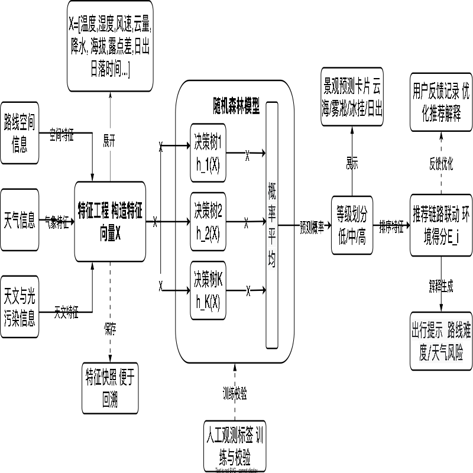
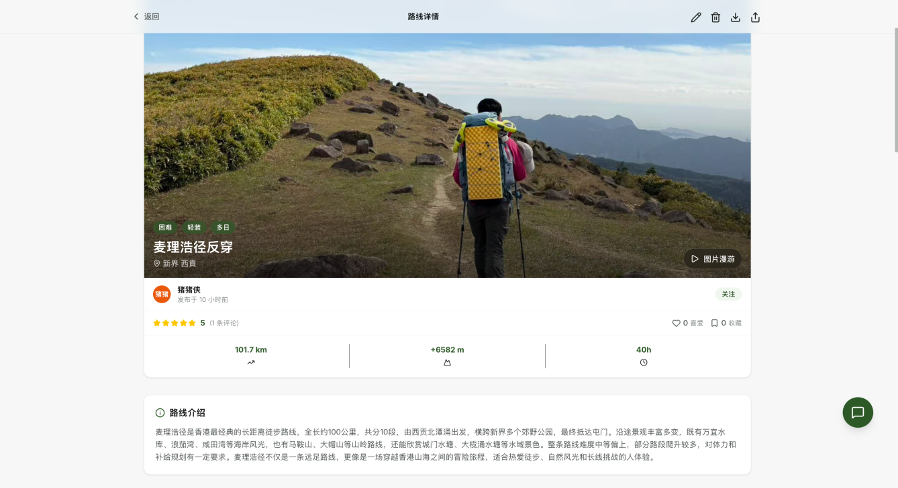
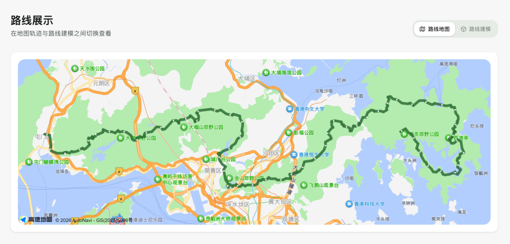
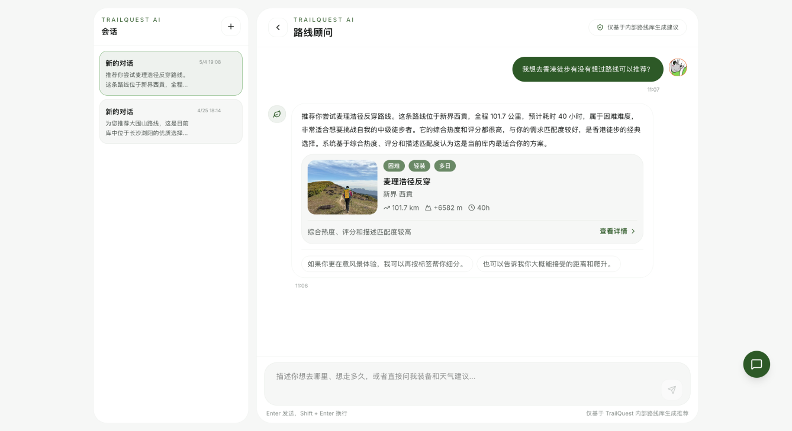
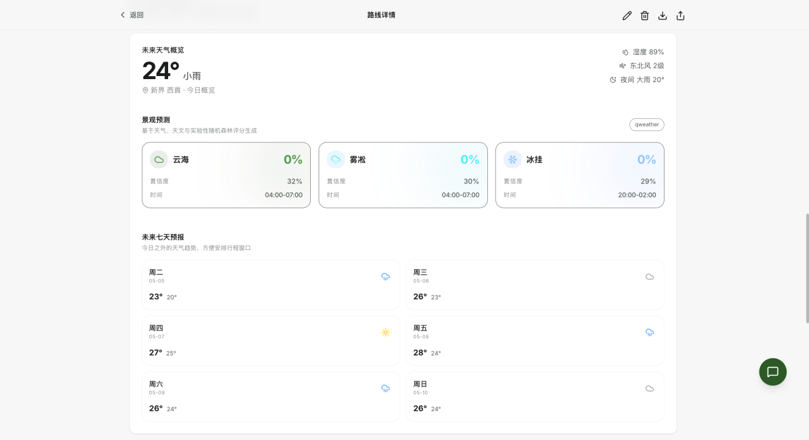
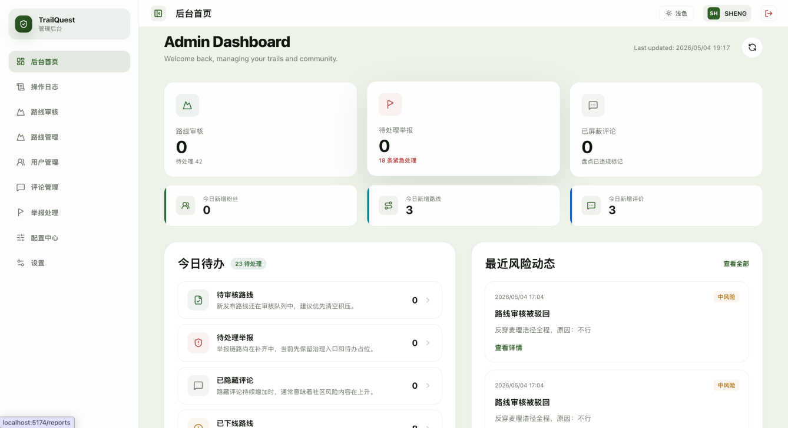
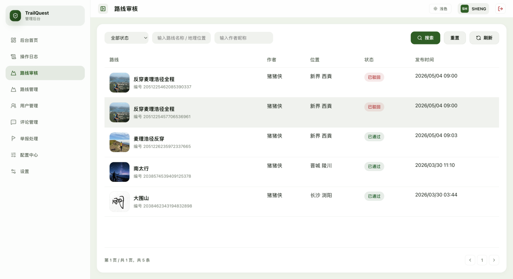
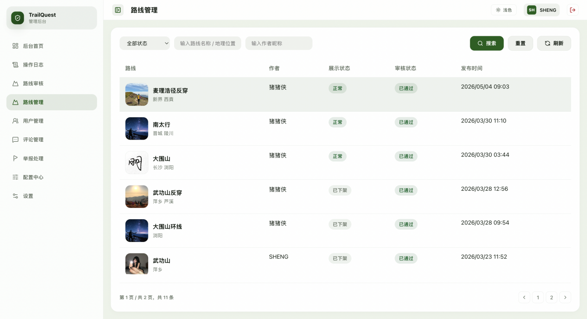

国外研究
- 路线规划从最短路径转向质量感知与多目标优化。
- 大模型工具调用为自然语言推荐提供新交互范式。
- 随机森林等机器学习方法用于能见度与雾类天气预测。
本科毕业论文（设计）答辩
Research Background
普通用户开始关注路线难度、天气窗口、景观概率和自身能力匹配，传统热度排序已经难以满足个性化决策。
Composition API、TypeScript、Vite、Pinia、Tailwind CSS、DaisyUI
MyBatis-Plus、MySQL、Redis、JWT、Spring Security
Function Calling、路线语义解析、地图轨迹渲染、随机森林景观预测




自然语言需求先解析为结构化条件，再完成路线检索、评分排序和推荐理由生成。标准检索走数据库，模糊需求才调用 AI，兼顾体验与成本。
输入路线坐标、轨迹海拔、天气与天文数据，输出云海、雾凇、冰挂、日出日落概率，以及风险等级和出行建议。




Thanks
感谢指导老师昌明权老师、刘妙兴老师，感谢辅导员陈艳老师和大学四年的授课老师。
也感谢一路同行的朋友们，让我对户外路线、天气变化和真实出行体验有了更具体的认识。
山高万仞，只登一步。